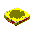

MACなアイコン集(フリーウエア)[Download!(macicons.lzh,4.48kB]
MACなアイコン集(フリーウエア)[Download!(macicons.lzh,4.48kB]
マックなアイコン/カーソル集です。同梱のアイコンの見本は下にあります。
アイコンはMaclyzerでも使えますので、どうぞ宜しく。
カーソルはWindows95/98のコントロールパネルで変更できます。
| MACなアイコンの見本 | ||||||
My Computer Icon |
Trash Icon (Empty) |
Trash Icon (Empty) |
Trash Icon (Full) |
Trash Icon (Full) |
Folder Icon(Close) |
Folder Icon(Open) |
Harddisk Icon |
Watch Cursor |
Arrow Cursor |
Toaster Cursor |
 Bread Cursor |
Eyes Cursor |
|